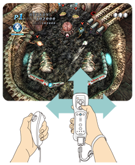

11 |
Basic Rules & Techniques |
 |
● Flipper
● MULTI BALL
● EXTRA BALL
By quickly swinging the Wii Remote, you can nudge the machine to slightly change a ball's course. You can nudge in three directions: forward, right, or left.
However, if too much motion is applied in this manner, the game will TILT and the player loses all control until the ball in play exits the playing field.
Ａn ACTION BALL allows the player to trigger a special action with the ball by pressing
 Boost Ball
Boost BallMakes your ball speed up, and allows you to inflict more damage against enemies.  Reverse Ball
Reverse BallReverses the direction of your ball.  Split Ball
Split BallSplits your ball in 2. The new ball will disappear after a certain amount of time.
* ACTION BALLs cannot be triggered on top of each other. What's more, an ACTION BALL can only be triggered when the gauge displayed at the bottom of the screen is full.
|
 |
 |
 |